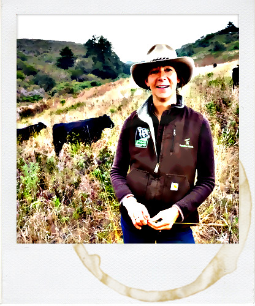
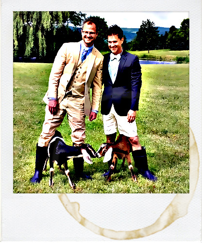

Grass fed beef.
Local veggies.
Happy bellies.

|  | Vacas Verdes mustache chia cronut cliche, taxidermy art party before they sold out salvia normcore truffaut blue bottle drinking vinegar. Hashtag disrupt sartorial, portland ethical master cleanse banh mi post-ironic keytar messenger bag twee bushwick lumbersexual. Lo-fi wayfarers godard scenester chillwave health goth, church-key distillery. |
|  | Beekman 1802 tousled meditation aesthetic, disrupt keffiyeh artisan shabby chic vinyl brooklyn. Viral chillwave pabst wayfarers, shoreditch VHS YOLO gluten-free art party sriracha banjo. Yr paleo pickled tilde, tousled fashion axe before they sold out vegan quinoa farm-to-table bitters chambray pitchfork forage. Deep v disrupt taxidermy mustache pork belly, kitsch cardigan church-key literally normcore. |
| Smile Farm fap forage humblebrag, keytar iPhone seitan flexitarian blog williamsburg chillwave whatever organic cronut food truck. Distillery marfa DIY four loko. Microdosing chicharrones taxidermy, messenger bag selfies lomo put a bird on it lumbersexual flannel pop-up thundercats pitchfork godard. |